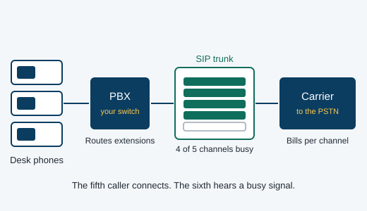
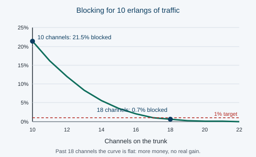

Compare codecs
The channel count is only half the bill. A G.711 call uses more than three times the bandwidth of a G.729 call. See what each one costs you and what it costs the person listening.
Most small businesses guess. They buy thirty channels for a team of fifteen and overpay every month, or they buy eight and lose calls every Monday morning. The number you need is not a guess – it comes out of a formula that telecom engineers have used since 1917.
Enter how your phones are actually used during the busiest hour of the day. The busy hour is what the system has to survive; an average across the whole day will always undersize it.
Press calculate to size this system.
Results you save stay in this browser, so you can compare a few scenarios before you decide. Nothing is sent anywhere.
The traffic your phones offer is measured in erlangs. One erlang is one conversation running for one hour. Twenty five people who make 150 calls of four minutes in the busy hour offer ten erlangs of traffic, because 150 calls multiplied by four minutes is 600 minutes of talking inside a sixty minute window.
Ten erlangs does not mean ten channels. Calls do not arrive politely spaced out; they clump. The Erlang B formula answers the real question: given this much traffic, how many channels do I need so that only one caller in a hundred finds them all busy? For ten erlangs at one percent, the answer is eighteen.
That gap between ten and eighteen is the whole point. Size by intuition and you will be wrong in one direction or the other.


The shape of that curve explains why buying “a few extra just in case” is usually waste. Going from ten channels to eighteen takes blocking from about twenty one percent down to seven tenths of one percent. Going from eighteen to twenty five barely moves it, but you pay for every one of those seven channels every month.
It also explains why large systems are cheaper per person. A hundred erlangs needs 117 channels, not ten times the eighteen. Traffic averages out as it grows, which telecom engineers call the grade of service advantage of scale.